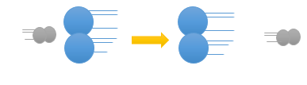
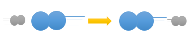
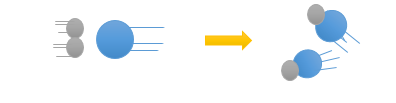
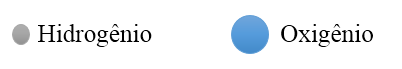

CINÉTICA
CINÉTICAA partir do estudo dos fatores que influem na velocidade das reações, os cientistas imaginaram uma explicação simples para o modo pelo qual são quebradas as moléculas dos reagentes e são formadas as moléculas dos produtos de uma reação, com isso criaram a teoria das colisões que será explicada através da reação entre o H2 e o I2 para formarem dois mols de HI.
Então, as moléculas de H2 e I2 se aproximam com bastante velocidade.
Em seguida chocam-se violentamente.
E por fim as duas moléculas de HI separam-se rapidamente.
Esse é um mecanismo simples e que ocorreu em uma única etapa, chamada de reação parcial ou elementar. Condições para que ocorra reação - Colisões com orientação favorável e orientação desfavorável.
Para exemplificar iremos reagir o H2 e o Cl2 para obtermos o produto HCl, 1H2(g) + 1Cl2(g) → 2HCl(g), para que essa reação possa formar produtos elas devem colidir bruscamente com uma energia suficiente e em uma orientação favorável conforme mostra as ilustrações a seguir:
| Orientações Possíveis | Resultado | |
|---|---|---|
|  | Orientação desfavorável: A reação não é efetiva e a orientação das moléculas são desfavoráveis e com isso não acontece reação. | |
|  | Orientação desfavorável: A reação não é efetiva e a orientação das moléculas são desfavoráveis e com isso não acontece reação. | |
|  | Orientação Favorável: A reação é efetiva a orientação das moléculas é favorável e com isso acontece reação. | |
|  | ||
Então, para que os produtos sejam formados, as moléculas dos reagentes devem colidir entre si de forma efetiva, para isso, elas devem ter energia mínima suficiente, conhecida como Energia de Ativação, para quebrar as ligações já existentes. Essas colisões devem ocorrer com as moléculas orientadas de forma favorável, para acontecer à formação de novas ligações e consequentemente resultando nos produtos. Porém, há também a colisão não efetiva, em que não acontece a formação de produtos.